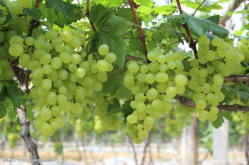

落花生（学名：Arachis hypogaea
Linn.）：蔷薇目、豆科，落花生属的一年生草本植物。根部有丰富的根瘤；茎和分、褐色或黄色的，这与花生的品种及土质有关。花生果壳内的种子通称为花生米或花生仁，由种皮、 子叶和胚三部分组成。种皮的颜色为淡褐色或浅红色。种皮内为两片。是生产食用植物油的原料，花生果仁中提取油脂呈透明、淡黄色，味芳香，种子含脂肪油40-50%，含氮物质20-30%，淀粉8-21%，纤维素2-5%，水分5-8%，灰分2-4%，维生素等。
[1] 花生米可以加工成副食品。
